META
a comprehensive list of every single change from the Heartstopper comics to the Netflix adaptation
Notes:
- This is a living document and will be updated with Seasons 2 and 3.
- All credits for images go to Alice Oseman and Netflix.
- Minor edits to the dialogue will not be addressed.
- No item on this list should be taken as criticism.
- All trigger warnings applicable to the comics (Chapters 1-3) and the show may apply to this document.
General
- all swearing removed, except for Harry Greene calling Charlie Spring a fag
- all text messages happen over Instagram, not Facebook Messenger/otherwise
- in comics Nick and Charlie start texting over Messenger, then move to iMessage; in show they only use Instagram
- outfits modernized to fit current trends
- dialogue modernized and shortened
- expanded subplots for the other relationships (Tao Xu / Elle Argent, Tara Jones / Darcy Olsson) as well as friendships between characters (Elle/Tara/Darcy, Tao/Elle/Charlie/Isaac)
- Aled Last removed, replaced with Isaac Henderson
- Oliver Spring removed
- Christian, Otis, and Sai not mentioned by name, all dialogue by them removed
- Otis is mentioned in the subtitles (Episode 4)
- Christian, Otis, and Sai have been individually cast
- new character, Imogen, introduced
- new character, Yan (Tao’s mum), introduced
- majority of Charlie’s inner thoughts/monologues redacted, e.g.:

- removed several instances of Charlie doubting or hating himself; results in Netflix-Charlie being happy where comic-Charlie would have been depressed
- Charlie’s time in the rugby team is significantly dramatized
- Nick is a lot less flirty
- Mr. Ajayi is a teacher at Truham, not Higgs
- effectively replaces the Sixth Formers who helped stopped the bullying against Charlie in Year 9
- Tao has several confrontations with Harry et al.; in the comics they did not interact
- timeframes remain obscure, whereas explicitly stated in comics e.g.:

Episode 1
- opening sequence: Ben doesn’t show up to meet Charlie at the library
 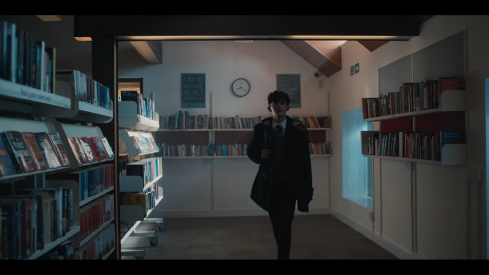
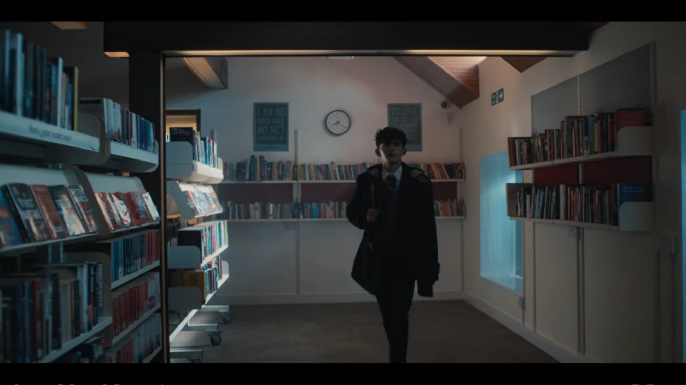 - Charlie has his form room number written on his hand
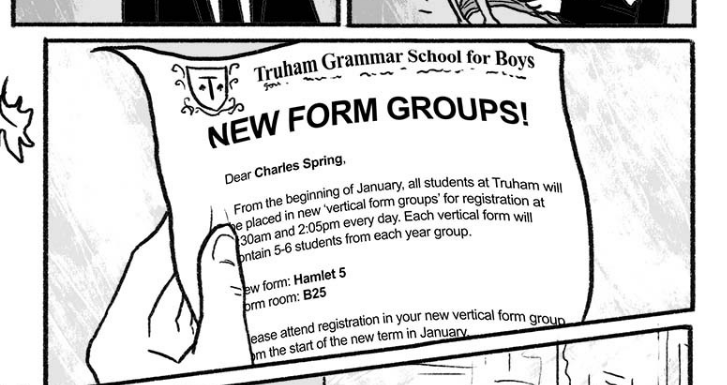
- added dialogue for Mr. Lange
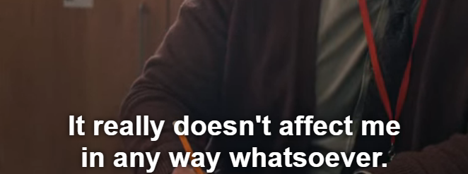 - redacted dialogue from fountain pen scene:

- expanded lunch scene with Tao, to include further exposition about Elle (e.g. the apple juice). Charlie saying “I don’t just fall for any boy who’s nice to me” moved to a separate scene.

- added two separate Ben scenes where he and Charlie do meet up and make out.
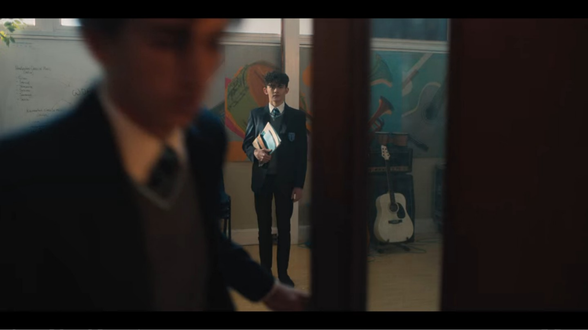 - ‘Nick doing homework on the way to class’ scene: dialogue edited, added in much earlier, Charlie doing Nick’s homework replaced with the smiley face. In the comics, this scene happens around the equivalent of Episode 6 (“Girls”).

- removed Ben confronting Charlie in the lockers. Ben’s confrontations are condensed into the one final scene where Nick saves Charlie.

- Technical explanations of rugby removed

- added scene with Mr. Ajayi
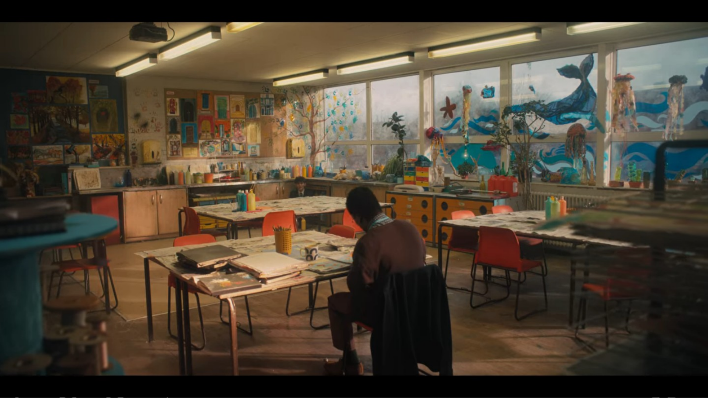 - dialogue removed. Coach Singh says something similar instead in Episode 4

- scene removed:

- added scenes with Tori:


- added scene: Tao and Elle looking for each other

Episode 2
- added scenes with Elle and Tara/Darcy (expanded exposition on how they became friends)


- scene with Tao replaced, takes place in maths class instead + includes Isaac
 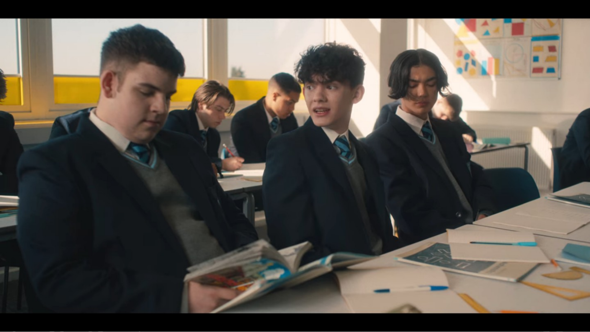
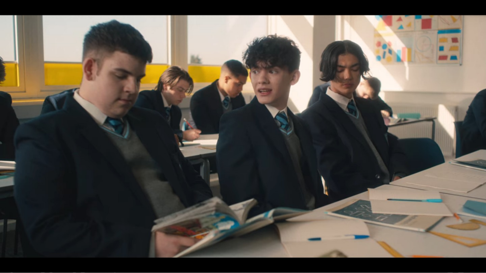 - added scene with Mr. Ajayi (“How do I stop liking someone? Specifically a straight guy.”)
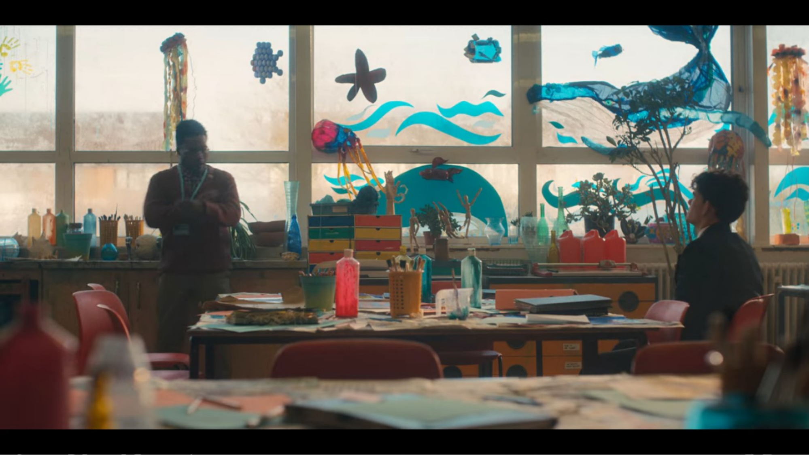 - Nick/Charlie’s home addresses not mentioned in the show

- removed scene; show cuts after snow scene to Nick’s mum telling him he seems much more himself around Charlie

- added scene with Imogen:

- removed scene with Tori:

- removed scene
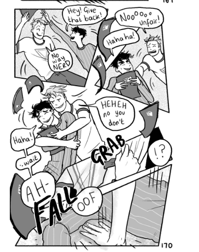 - Tao tells Charlie about Tara Jones in person, not over text


- added scene: “emergency meeting” where Elle promises to asks Tara about Nick
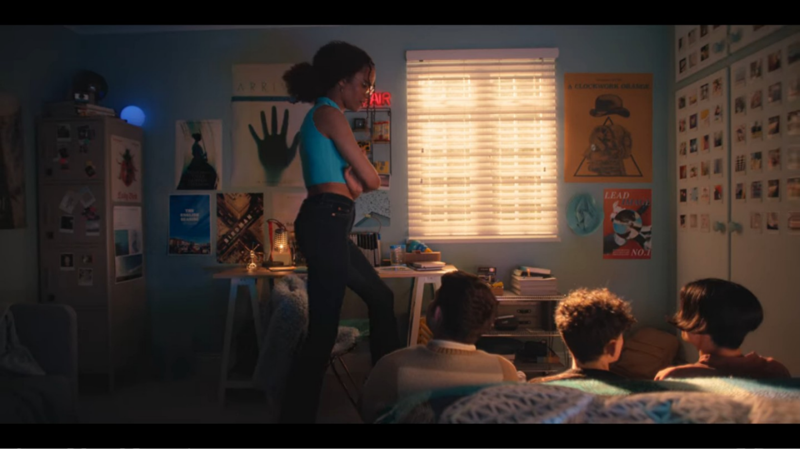
- added scene where Elle asks Tara in French class
- added scene where Charlie spaces out before asking Nick to come round his place. In the comics Nick and Charlie come round each other’s houses consecutively, with no buildup.

Episode 3
- added scene providing further context about Harry Greene’s party; introduces Imogen as conflict of interest.

- added scene where rugby boys egg Nick on about Tara
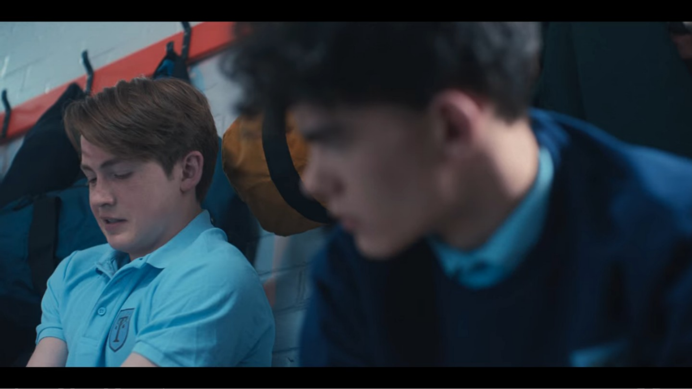 - added film night scene with Tao and Elle (“Well, sometimes change is a good thing.”)
introduces unresolved tension between Tao and Charlie, develops Tao/Elle relationship

- Tara and Darcy haven’t come out as a couple yet in the show by the time Harry’s party happens

- added scene: Tara and Darcy kissing at the party, as a way of coming out
- added scene where Imogen confesses to Nick at the party

- Harry calls for Nick after Nick/Charlie kiss, not Sai
- Nick’s POV after Nick/Charlie first kiss removed
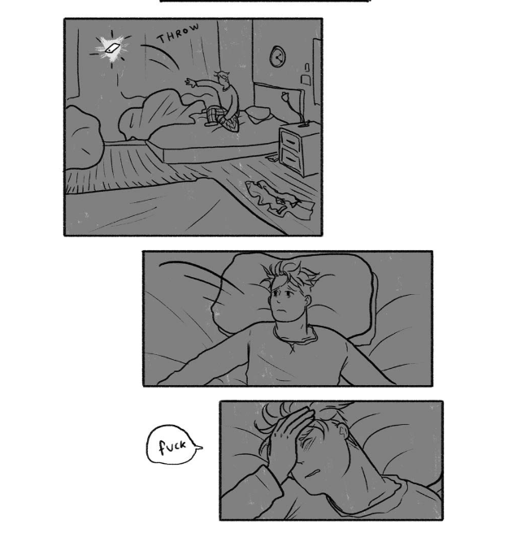
Episode 4
- Nick leaves immediately after the “proper full-on gay crisis” scene; conservatory scene removed and split over multiple episodes (Nick confessing his feelings - Episode 5, “How did you realize you were gay?” park scene - Episode 6)
- added scene: Tara kisses Darcy at school
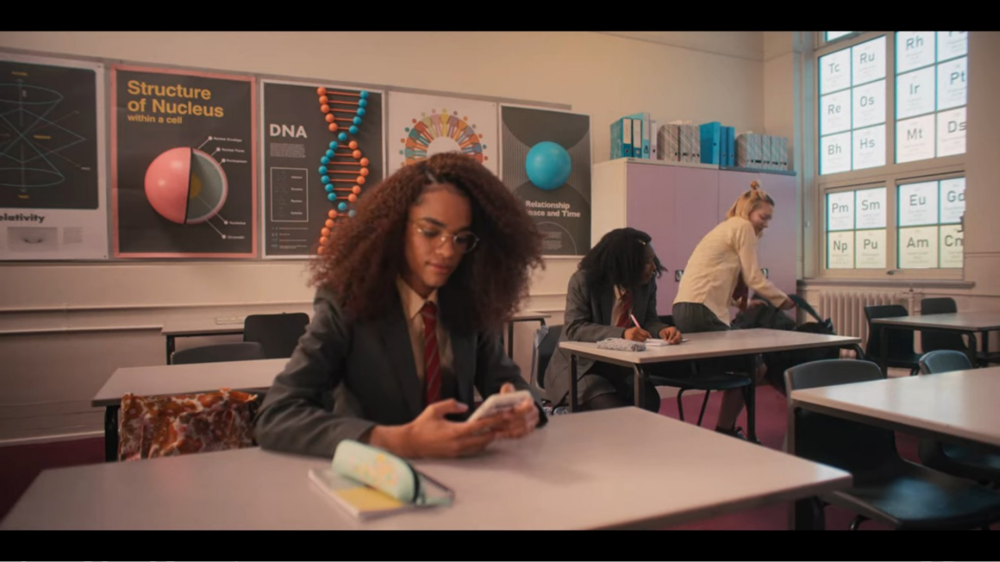 - added scene: Nick and Charlie having lunch in Mr. Ajayi’s room
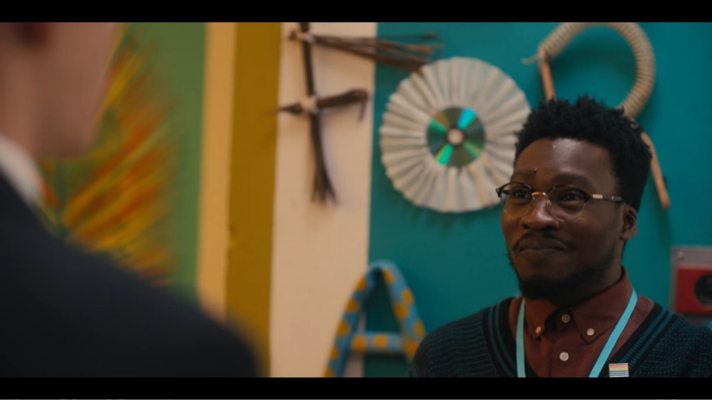 - added long rugby montage, where Charlie tries to improve but fails, and Nick is torn between his old friends and new relationship with Charlie and his friends
- Nick/Charlie infirmary scene is a lot more tense as a result - whereas it was much more casual in the comics


- added scene with Imogen; added subplot of Imogen’s date conflicting with Charlie’s birthday party
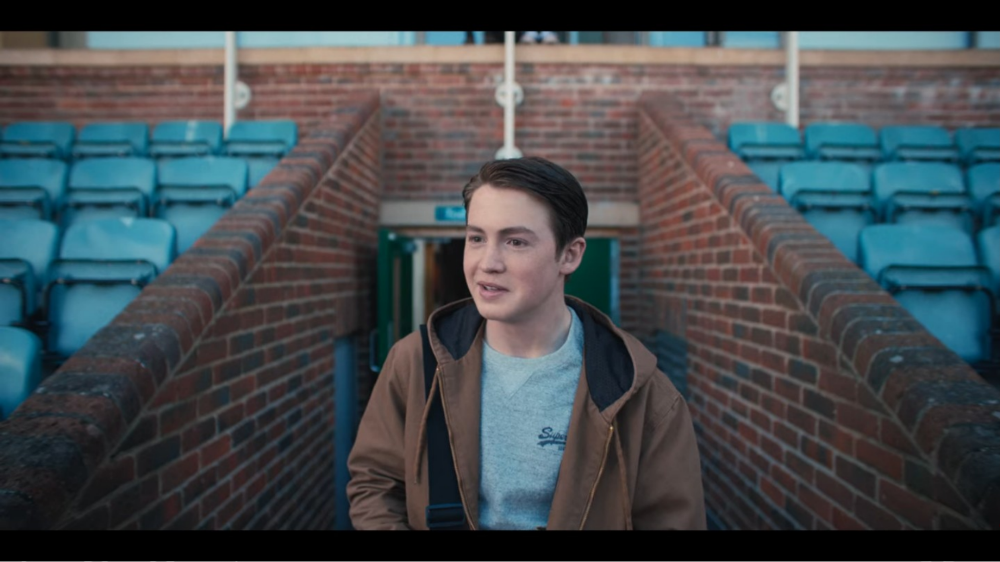
Episode 5
- Charlie’s birthday is on Saturday, not Tuesday
- bowling scene:
- happens before the park scene (see below), instead of after:
(park scene is in Episode 6)

- more screen time for Elle and Tao, whereas this was their only interaction in the comics:
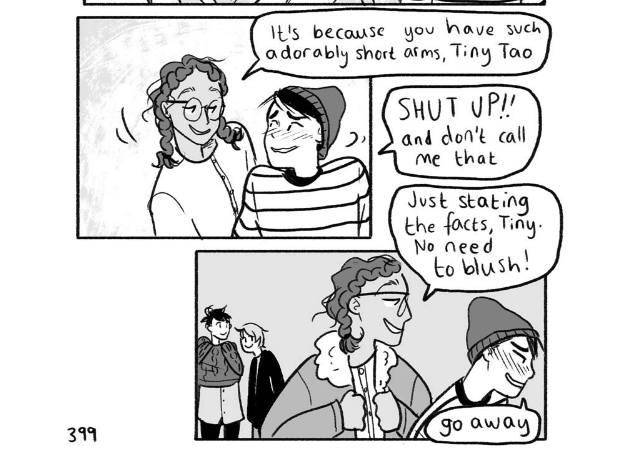 - Nick tells Charlie he likes him (dialogue moved from conservatory scene in comics)
- Nick/Charlie don’t hide behind a menu before kissing
- Charlie’s friends don’t leave before Nick/Charlie kiss
- dialogue before the kissing scene is reordered
- comics: present > kiss > overheard Tao > Nick worried he’s like Ben > “I wish I knew then what I knew now”
- ‘Nick worried he’s like Ben’ moved to Mr. Ajayi’s room scene in Episode 4
- confessing feelings already happened in the comics at the conservatory
- show: overheard Tao > present > confessing feelings > “I wish I knew then what I knew now” > end with kiss
- added scenes with Imogen (opportunity for Nick to confess his struggles for the first time to someone) and Harry afterwards
Episode 6
- added scenes: Tara/Darcy announce their relationship on Instagram. Elle tells them about Tao
- scene removed: Nick/Charlie didn’t hang out/make out at Nick’s after the party - if they did, it is never mentioned

- Nick telling Tara/Darcy about Charlie is split into two scenes:


- Charlie stares at Nick, instead of vice versa as in the comics:
 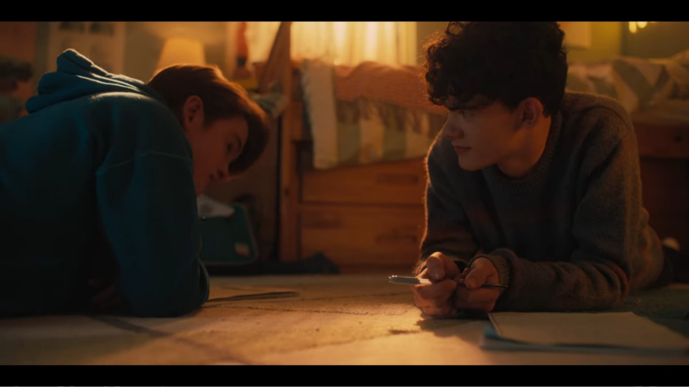
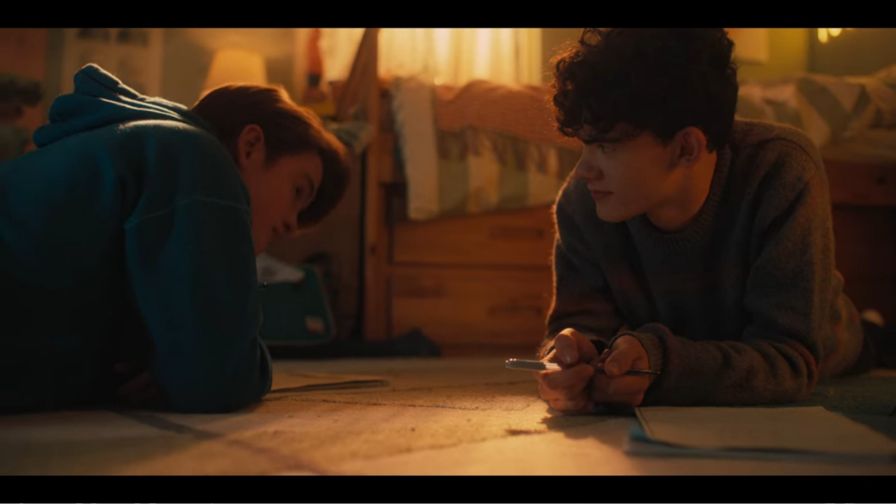 - triple date + concert!! (doesn’t happen in the comics)
- Nick telling Charlie about him possibly being bisexual is a separate scene
(in the comics this happens in the park scene)
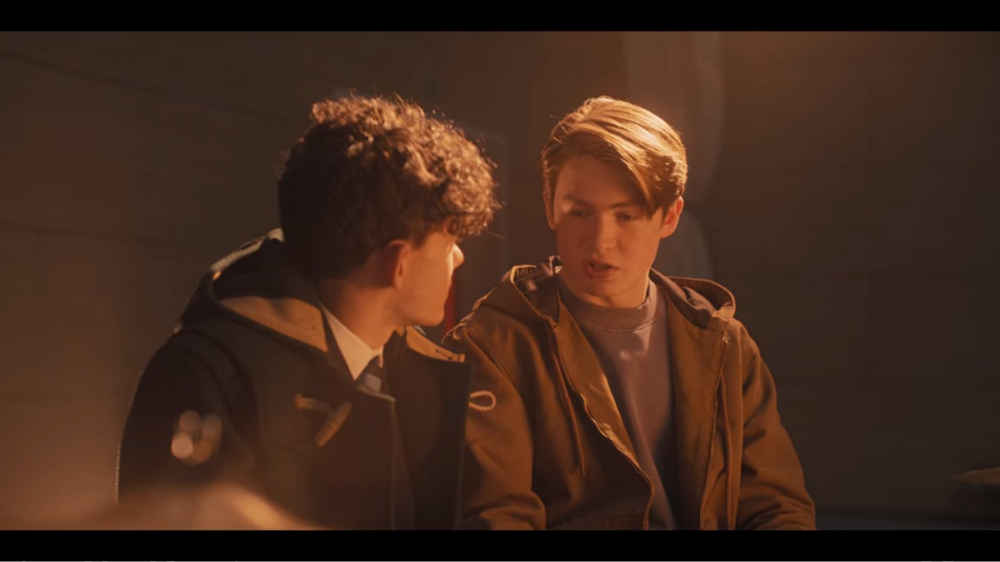
Episode 7
- scene with Tori moved and recontextualized:

- in the comics, this scene happens immediately after Tori walks in on them kissing (Ep. 6 in the show) and Nick leaves afterwards
- in the show, this scene happens as Charlie prepares to go to the cinema with Nick and his friends. Tori does not walk in on them kissing
- added dialogue for Tori:

- added scene (flashback) with Ben:
(implied fear of being rejected, not a plotline in the comics at this point in the story)

- scene after Harry’s homophobic comments much more dramatic, tension unresolved:
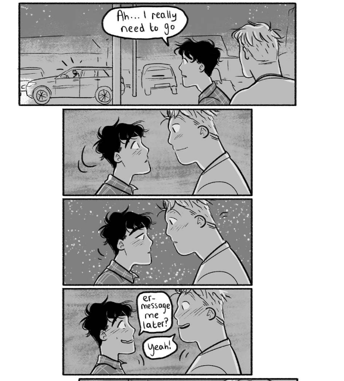
- this scene happens at school (in form), not at Nick’s house
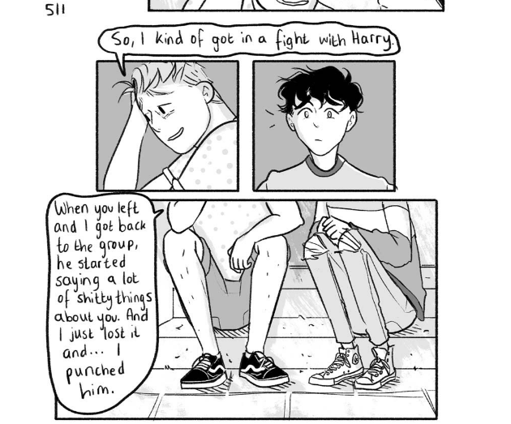
(in the comics this scene is followed immediately by the beach scene, then Nick coming out to his mom - after which Book 3 ends) - added subplot of Ben finding out Nick and Charlie going out
- added scene: Elle tells Tao that Nick and Charlie are going out. in the comics, Tao finds out much later (Chapter 4) after Charlie himself tells him.

- added scene: Charlie wants to break up with Nick, fearing that he is ruining Nick’s life (doesn’t happen in comics)
- added scene: Harry, Nick, and Tao fight; Harry gets suspended (doesn’t happen in comics)
Episode 8
- everything up to the beach scene: Charlie venting to Tori, Charlie avoiding Nick, Charlie quitting the rugby team, Nick and Tao talking it out, ALL of Sports Day, etc.
- Nellie isn’t there at the beach:

- the show never mentions David:
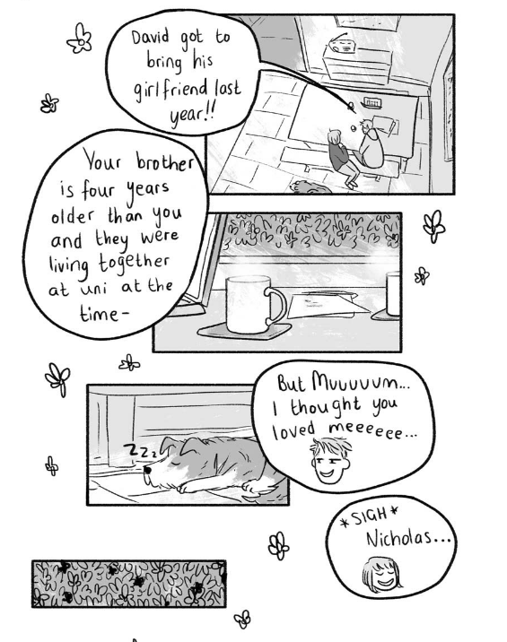